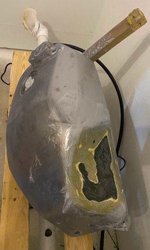
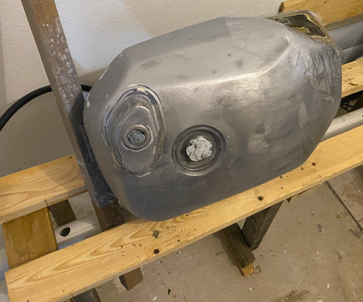
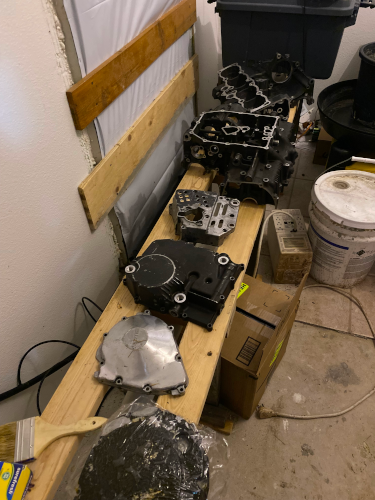
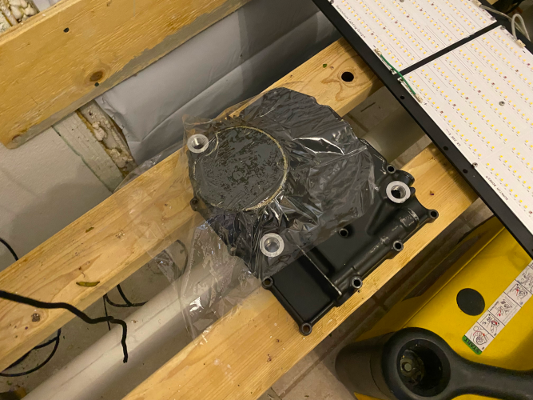

I started to strip the paint off the plastics, I will look for them.
Here are some pictures of the tank getting stripped. This is a time consuming process, there was 5-6 layers of paint on it. I started with a quart of paint stripper, that took me throught stripping the paint of all the plastics.
The tank is for some reason a different story, I have so far used 1/2 gallon of paint stripper by painting it on the tank, carefully covering up in Cling-Wrap and let it sit until I can see the paint release and wrinkle up. Likw with the plastics, there are several layers of paint of different color and thickness, someplaces the stripper ate all the way to the metal and in others there are patches of a thick black paint that the stripper is not really biting on, it's more like a liner of sorts - it feels plasticy to the touch and is much much thicker than the other layers of paint. Is this thick black layer a 'rescue' paint that can seal a rusty and leaking tank from the outside ? Once I get all the paint off the outside and the rust off the inside I should be able to spot any pin-holes.
Jan 2023 - Home from Christmas vacation and back on the build. The stripper that I had painted on the last patches of paint did nothing after sitting for 2 weeks so I decided to sand off the rest of the paint. Starting to look better.
 
July 2023 - Tons of slacking, more vacationing, other projects... yadda yadda yadda but I did find time for more sanding and I was able to get down to the metal, and sure enough .... this revealed a handful of holes, 1-2 mm in diameter at the bottom of the tank where water likely have collected over the years - maybe this also explains the chemical-resistant plastic layer I fought with earlier, it would definitely be easier to encapsulate the whole tank instead of striping the paint, fix the holes, and repaint.
The areas around the holes were cleaned and soldered shut, I feathered the solder in over bigger areas, then sanded it smooth. On the top there were some indentations I was able to smooth out with Bondo.
Getting a good look inside the tank is difficult, there are Baffles that block the view through the filler hole. I tried using a cheap bore-scope, and even though the image quality was surprisingly good the depth-of-focus wasn't, and bending the cable around the Baffles and corners makes it almost impossible to get anywhere or see if the 'brown fuzz' on the bore scope is rust or "gunk" from old gas. I need to get the tank clean everywhere inside, any oil/gunk will prevent the tank liner from adhering to the inside.
The engine casings are in a decent condition but the paint has a good amount of wear.... no problem, I've stripped paint before!... not so hasty, this is more like a Dye than a paint and is a real B*@#4 to get off (why would it be easy) I used the same 3 strippers as for the tank, at different temperatures and durations with no effect.
 Sometime in June I felt I ran out of patience with this, so I coughed up some money and had the pieces media blasted at the local engine builder, who is also currently boring the cylinders to fit the new oversized pistons. This will increase the displacement 1052ccm->1109ccm and increase the compression 10:1->12:1 - I was a bit concerned about having to run race-gas but allegedly this is a common procedure for these old bikes, and a few forum members reasured me that I would have no issues running pump-gas.